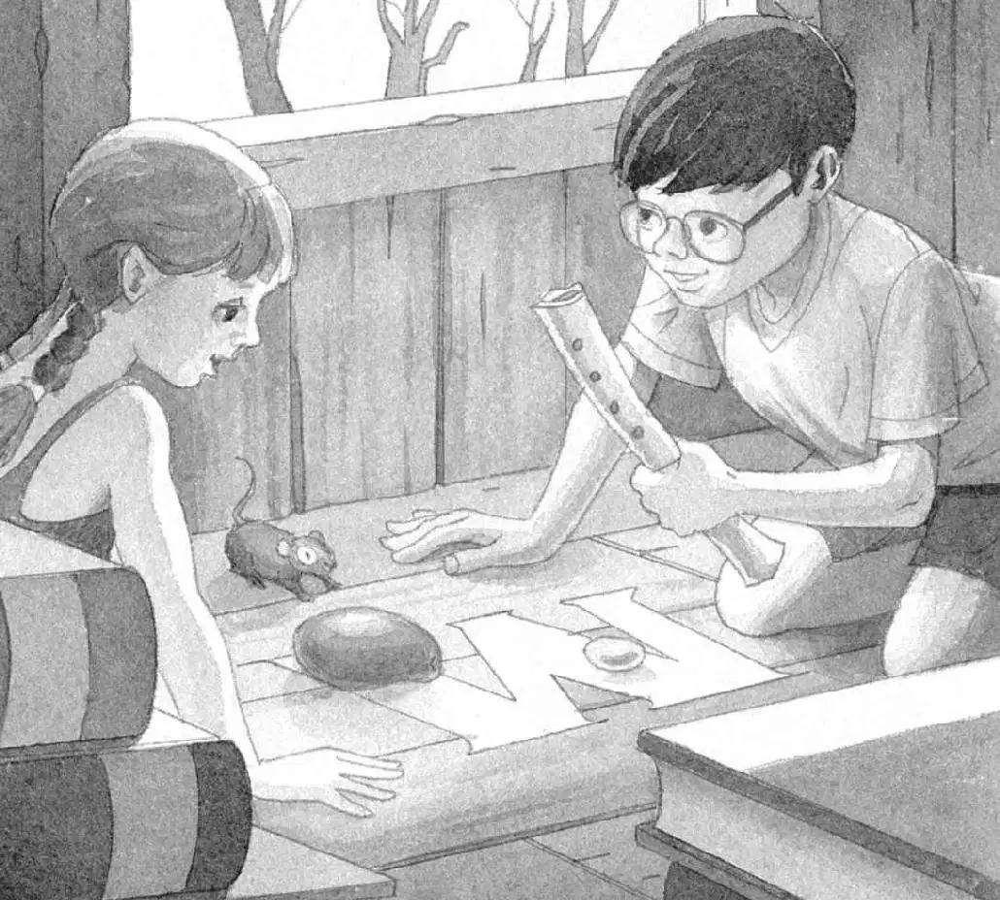
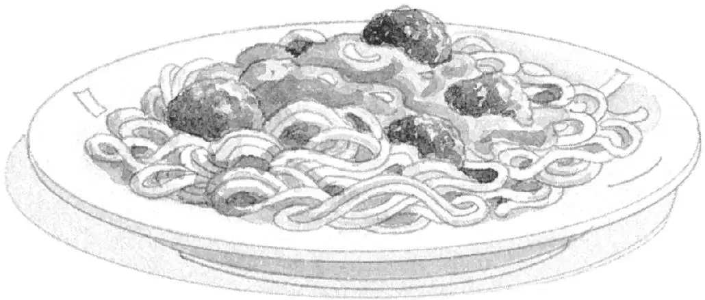

Birds sang. The air was soft and warm.
“I hope they find their coats,” said Annie.
“Me too,” said Jack. He pushed his glasses into place.
Squeak.
“Hey, you—how did you find the sorcerer?” Annie asked Peanut.
Squeak.
“It’s a secret, huh?” said Annie. She turned to Jack. “Where’s the flute?”
He held up the mammoth bone. Then he placed it on the M carved into the floor. Next to the mango from the rain forest. Next to the moonstone from the time of ninjas.

“Moonstone, mango, mammoth bone…” Annie said. “We need just one more M thing. Then Morgan will be free from her spell.”
“Tomorrow,” said Jack.
Annie patted Peanut on the head. “Bye, you,” she said.
She started down the rope ladder.
Jack gathered his things.
He paused and glanced at the mouse. She stared at him with big brown eyes.
“Thanks again for helping us,” he said.
Then he climbed down the rope ladder and jumped onto the ground.
Jack and Annie ran through the Frog Creek woods onto their street.
Their neighborhood looked rosy in the sunset.
It’s great to be back in this age, Jack thought. Warm and safe and almost home.
“I’m glad we don’t have to go hunting for dinner,” he said.
“Yeah, Mom and Dad already did that,” said Annie, “at the supermarket.”
“I hope they trapped some spaghetti and meatballs,” said Jack.
“I hope they trapped a pizza,” said Annie.
“Hurry, I’m starving,” said Jack.
They ran up their sidewalk and through their front door.
“We’re home!” shouted Annie.
“What’s for dinner?” shouted Jack.
